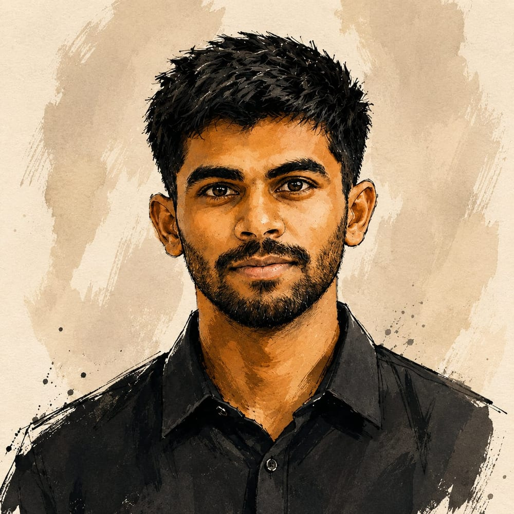
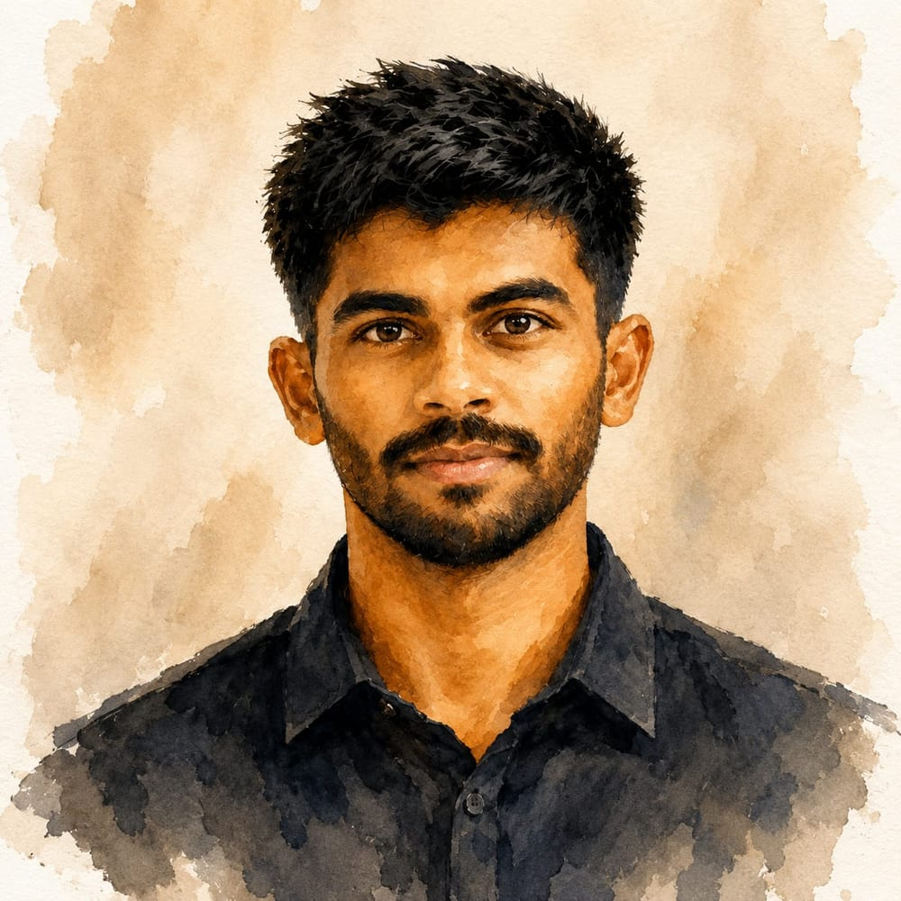
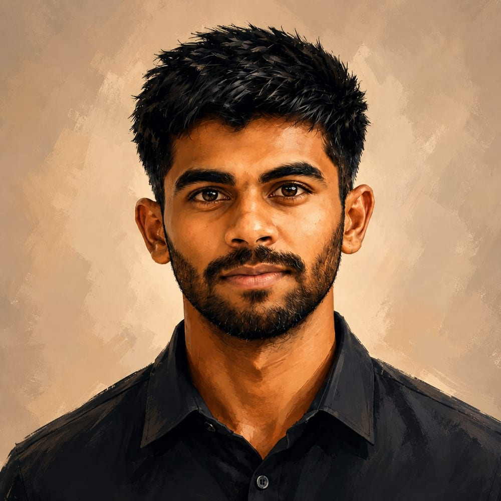

Thribhuvan
Software Engineering Intern at Rhino Stream Technologies
{{ ossCount }} fixes merged into Svelte, Prisma, SolidJS and Supabase.
{{ projectCount }} products of my own, {{ liveCount }} live.
Software Engineering Intern at Rhino Stream Technologies
{{ ossCount }} fixes merged into Svelte, Prisma, SolidJS and Supabase.
{{ projectCount }} products of my own, {{ liveCount }} live.



Open to software engineering roles
Software Engineering Intern · Rhino Stream Technologies
At Rhino Stream I turn game-streaming telemetry into answers: why a WebRTC session dropped, where latency and jitter spiked. Outside work I ship my own products, like Tray and Unhold. When a tool I rely on breaks, I fix it upstream. That’s {{ ossCount }} merged fixes so far, in Svelte, Prisma, SolidJS and Supabase.
Investigating connectivity and performance across ~410K CockroachDB telemetry records, and building a restartable 200-session enrichment pipeline with concurrency-safe job claims.
{{ ossCount }} merged fixes across {{ ossRepoCount }} repositories, including Svelte, Prisma, SolidJS and Supabase.
JNTU Anantapur · CGPA 7.6/10
A little each day, away from a screen.
The late symphonies, mostly while I work.
Open Source
Merged fixes for compiler behavior, data handling and authentication. Each entry links to the patch and maintainer review.
Software Engineering Intern · Rhino Stream Technologies
Hyderabad, India · Open to Bengaluru · thribhuvan003@gmail.com
Software engineering intern building application services, telemetry tooling and reliable database workflows.

Education & Experience
{{ e.org }}
{{ x.org }}
{{ l.note }}
Photos
Temples, hills, and things I’ve saved. Shot on a phone, mostly around South India.
Music
Mostly Mozart. The late symphonies get the most replays.
Contact
Email me with the role or project you have in mind.
First time here
Everything lives behind the icons along the bottom. Open one, drag it, close it with the red dot.
Skadoosh!Po, Kung Fu Panda